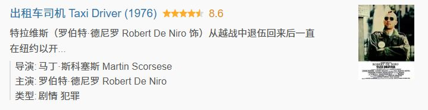
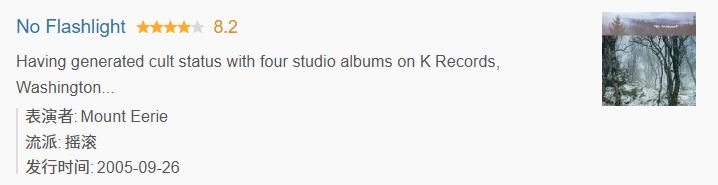
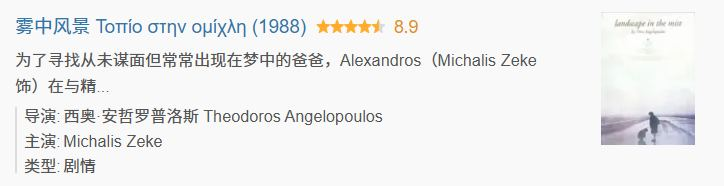
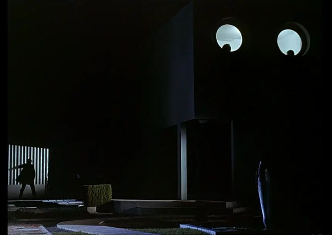
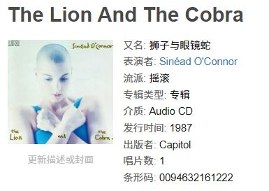
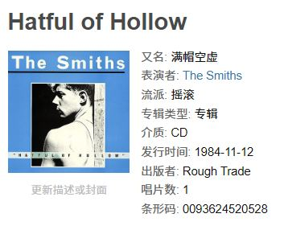
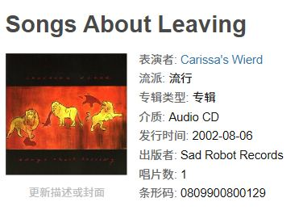
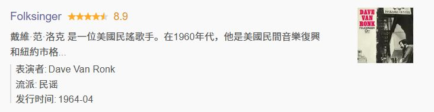

无数镜面折射出支离破碎的纽约城市图景，最难忘怀雨后路面水渍反照的霓虹，那是肮脏、冷漠、无所适从的心所能给你的最亮丽风景。不堪的画面被马丁反复抑制，与影片里的出租车司机同时陷入一种迷乱压抑的心境；Billy joel式的抒情旋律在凌晨注入漫无归属的心灵里，带来的若不是麻醉便是更令人不安的失眠。心脏不可思议地起搏如定音鼓一般沉重，欲望是黑色的池塘，水藻暗暗动身，只有溃堤之水才能带走。
Room 01 / Notes · 札记
看完的当天或第二天写下的。有的长，有的只有两句—— 它们是还没长成文章的念头，有些后来成了论文，有些就停在了这里。

无数镜面折射出支离破碎的纽约城市图景，最难忘怀雨后路面水渍反照的霓虹，那是肮脏、冷漠、无所适从的心所能给你的最亮丽风景。不堪的画面被马丁反复抑制，与影片里的出租车司机同时陷入一种迷乱压抑的心境；Billy joel式的抒情旋律在凌晨注入漫无归属的心灵里，带来的若不是麻醉便是更令人不安的失眠。心脏不可思议地起搏如定音鼓一般沉重，欲望是黑色的池塘，水藻暗暗动身，只有溃堤之水才能带走。

How?里那段宗教感的吟唱再一次提醒了我。Phil的自然观与绝大多数民谣歌手那种宽泛的赞颂不同，他那宽容而辽阔的目光翻越了晴朗的气象，洞察到天地间真实的混沌与不安。出于对乌云和闪电的敬畏，出于对不可预测的洪水的原始恐惧，它的诗句和歌声里蕴含着令人失语的震悚。作为自然之母虔诚的信徒，每逢黄昏或日食，他卑微的祷告与祝福便无休止如杞人忧天。并非是抗拒温柔——我们也曾听见气候平和的歌谣，但大多数时候，柔软的旋律等同于虚伪的奉承，暴烈无情的噪音轰鸣才是真实的。因此我们听见他音乐里的鼓点被替换成雷鸣，扫弦声被替换成暴雨，专辑的封面不见天光，只有树木黑色的剪影和坠落的月亮。
电影似乎都来自于城市，其次是乡村，最后才是自然。观影经历中”建筑电影”数不胜数，《玩乐时间》《大红灯笼高高挂》《去年在马里昂巴德》以及大量建立在室内的情节剧；一些电影或进入野外，但只是将野外作为建筑的外延平台。一些公路片、灾难片看似在未经人类开发的原生态场景中叙事，但却带着甘愿被自然吞噬的自卑情绪，本质上又是与自然隐隐作对的。电影里的人似乎永远离不开人造的场景（事实上现实中的人也是如此），游荡在郊野、林地、水域、荒原里的镜头已然稀少，更别说让人物与植物、山水、土壤与海洋进行密不可分的对话（或称之为”强相关“，一种能使人与自然构成榫卯的结构性强度）。
我们已经习惯了这样一个事实：现代人的肢体与人造物之间的互动愈发显得“自然”了，似乎人的双手生出来就是用于推开一扇窗户或是操控电视遥控器（这在雅克塔蒂或巴斯特基顿的作品里被大量讨论，他们给房屋的单元设置明确的性格与功能——门是空间的结界，玻璃是幻觉之墙，窗户是银幕——无论这些设定出于批判抑或娱乐）。
我们很少想象到，人的某个身体结构能与自然产生圣洁而原始的对话，如同水母的伞状体生而能与水共舞。从这层意义来说，《阿凡达》里对于尾巴可与树须交融的想象的确是自然式的。在现代——在这个人们不再将“柳”和“梅”写入名字的时代——我们已忽视这种写作，没有导演会拍摄一个人如何用ta的指纹去感应水纹，或让檵木的花丝柔软地缠住人的手指（无论那带来的是暖意还是静电）。抚摸花叶的动作的确不是什么奢侈，但不该更凄然地沦为羞耻。

masterpiece..从濒死的白马开始。悠长迷惘的变焦镜头加以720p的画质使得今日的观感也如雾中寻路，毕毕剥剥的像素形成了观看的隔膜，景观从未离我如此遥远，同时又仿佛在梦中触手可及。如此荒冷的景观...枯寂的海，凄迷的雾，蚀朽的雕塑。为寻回那不曾有的父辈，如此如此的无望与希望中，流浪，流浪——却不是沉湎，不能只是一场提琴的葬礼。古典的景观时而被遗落乃至被贱卖，置换为现时景观的残破碎片：点唱机、直升机、摩托车，以及叫不出名字的机械装置；但那些古典之美仍会经由情节剧式的幻梦或是童话的叙述，再次显现于迷雾的旅途之中，化作自然降神的奇观——大雪冻结了街道上的人，海洋吐出石头的手，而雾霭以其淡出归还了孩子们的树的父亲。

masterpiece，还有什么比雅克塔蒂的电影更美妙风趣的恶作剧？！在技术的喧嚣已经不足为奇的时刻，即便默片向有声片已历经三十余年的迭代，这位人高马大的于洛先生仍在悼念他的小矮个朋友chaplin和keaton，因此拒绝发出声音，决定续写《摩登时代》和《电气化屋子》的故事。在灰而冷的现代主义建筑中，我们为人保守又行事谨慎的于洛先生好像忘记了肢体的律动与观察的能力，大晴天穿戴着他雷打不动的风衣与雨伞，笨拙地学习如何正常行走、如何体察家具的尺度、以及如何操控奇怪且吵闹的机械。（就连打嗝——这天然的律动，都是如此罕见且难以习得！）忙于赶时髦还要装体面的资本家们与成年人们自然不能接纳他，于是他与乱跑乱尿的小狗们和四处闯祸的小孩们结盟，悄悄把对称的裁剪为不对称的，从不容泥垢的花园闯入草丛和乱石堆里，默许工厂里的偷懒行为——还有恶作剧！是的，为了在我们亲爱的小小集市里听见美妙的鸟啼，你必须使使坏！

承接了Patti Smith的衣钵，极具撕裂感、同时又是神性的歌声。Jeff Buckley也是这个路数，用生命燃烧出来的音乐。just call me joe和lush部分曲目共享一个迷离界域，似林奇电影中才会出现的、天堂与地狱之间的花廊。…是的，再次确认，她是极少数能同时抵达天堂与地狱的歌者。

这张专辑讲述了一个多么让人感动的故事啊：一个无望的人在乌云下等待天堂。

封面令人想及阿尔塔米拉洞穴受伤的野兽。音乐并不具备通古或巫卜的能力，一滩不会到前生也不会到来世的现代血。
仅仅用“温暖”来概括yo la tengo一些缓慢的段落是远不够准确的，那些一顿一顿的吉他声其实让我联想到吞咽的动作，时间在牙关的咬合间浊长地流逝，有种“日复一日”的迟钝感。
好喜欢GVS 这两晚的助眠影像 其实摄影机目光很幼稚 和墨西哥男孩一样幼稚 可是昏昏沉沉的眨眼运动般的碎片剪辑把影像剪出了许多美妙的物件蒙太奇：可口可乐警察 和黄瓜牛仔裤 。 在深夜的街头看清一张旧脸 也需要许多次眨眼 从眼皮的弧形轮廓所围起的黑与黑之间的一闪而过里包裹住一具闪烁而永恒的身体
宽银幕上下的黑边是塑造“沉浸感”“梦境”“幻觉”的形式性手段，就像昏睡时欲将闭阖的上下眼睑以其滞重压迫现实。戈达尔与库布里克所推崇的1.37比例应该是“历史”“现实”的观念性手段，最早的那些往往具有纪录性质的默片，比方说《祖母的放大镜》就是这种观念，将创作者的目光原封不动“转播”给观众。而竖屏是非现实的拉伸，媒介（手机屏幕）的奴隶，杜绝群像与地景，它所驯养的是能生长出二郎神般竖目天眼或斗鸡眼的观众。
尽管经历“肖申克救赎”后，徐福一行在沙脊上形成了视觉意义上“一带一路”的政治景观，尽管结尾字卡的审查妥协，尽管镜头形式上可能遭遇的所谓布莱希特派意识形态批评，此类种种惕厉在一个充满仁慈与多面性的剧本面前尽可谅解，甚至可谓鸡蛋挑骨。文牧野厉害之处在于从大众接受角度、政治审查角度、道德伦理剧角度同时达到了精妙的平衡，借助某种最去政治化的感官化的想象历史、想象政治的中庸哲学观——“好好吃饭，活着就行”——潜伏到危险到新闻也惮于触及的议题，践行最基本的美德：曝光中东战争事实，使其与大众串联，抽止明哲保身的沉默螺旋，这还不够真善美吗？非常灵活的中国电影生存智慧，其中潜藏的却是朴素的世界性表达。w/Jorge

60s American Folk无疑是最适合午后漫长的地下铁通勤的音乐，列车日复一日磨碾着它锈蚀的牙槽，如此干枯贫瘠的嘶哑里却也有一种老马识途的睿智，Jackson C. Frank、Dave Van Ronk、Michael Hurley、Bob Dylan这群folksinger的声音就是这样在他们的句子之上倦慵地行驶着的。
没有匹配的札记。换个词试试——或者清空搜索框。